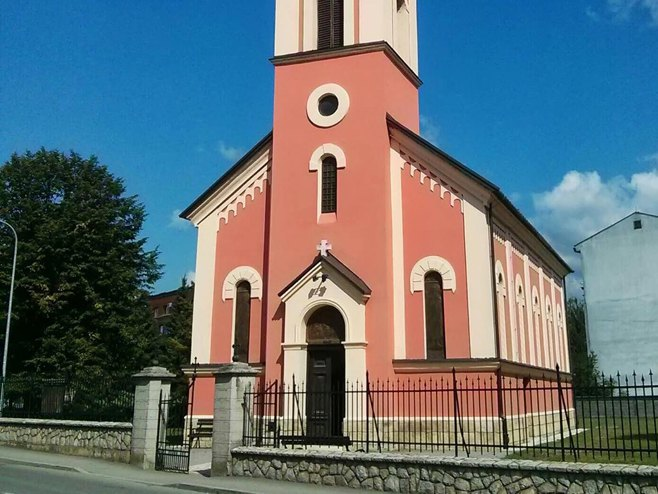
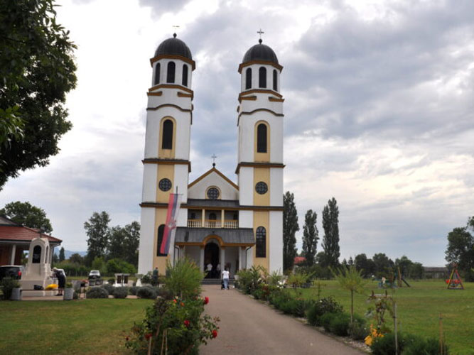
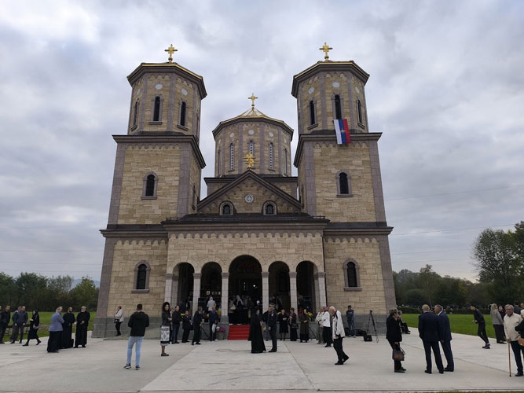
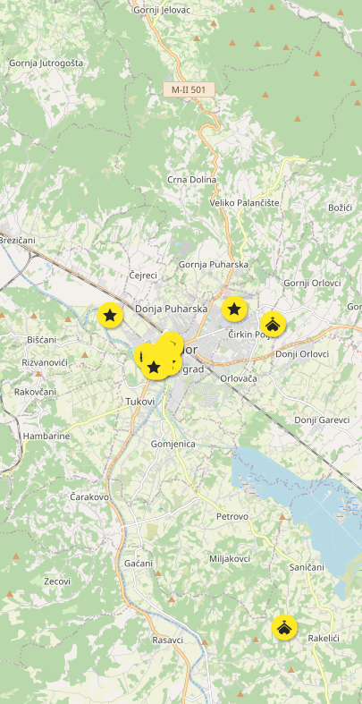

Crkva Svete Trojice izgrađena je 1891. godine na mestu starije crkve brvnare. Crkva je tokom Drugog svetskog rata devastirana a najznačajnija sanacija izvršena je 1994. godine. Ovaj sakralni objekat se nalazi na Privremenoj listi nacionalnih spomenika Bosne i Hercegovine.

Crkva Svetog Ilije u Prijedoru nalazi se na području Prijedor i predstavlja važno mjesto okupljanja pravoslavnih vjernika. Posvećena je Svetom proroku Iliji, koji se u narodu smatra zaštitnikom od nevremena i simbolom snage. Crkva se ističe svojom arhitekturom i bogato ukrašenom unutrašnjošću sa ikonama. U njoj se redovno održavaju bogosluženja i obilježavaju veliki pravoslavni praznici, posebno Ilindan.

Manastir Miloševac se, prema navodima iz crkvene dokumentacije, nalazio u blizini rečice Miloševice, na mestu pod nazivom Crkvina. Manastir je stradao tokom austrijsko-turskog rata 1683-1699. godine, a obnova manastira započeta je 2018. godine. Novi manastir se nalazi u neposrednoj blizini starog i posvećen je Pokrovu presvete Bogorodice.
